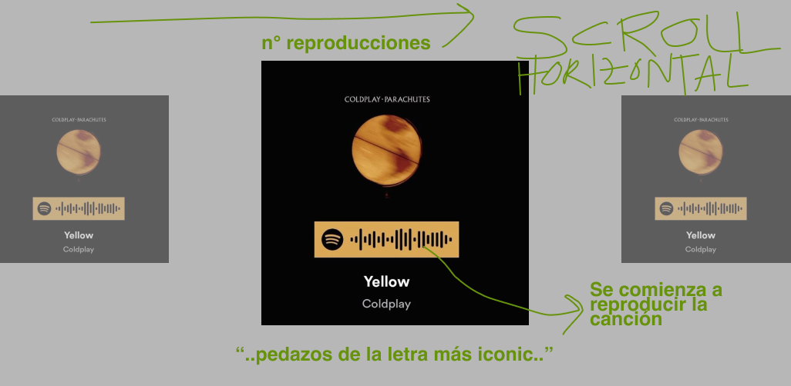
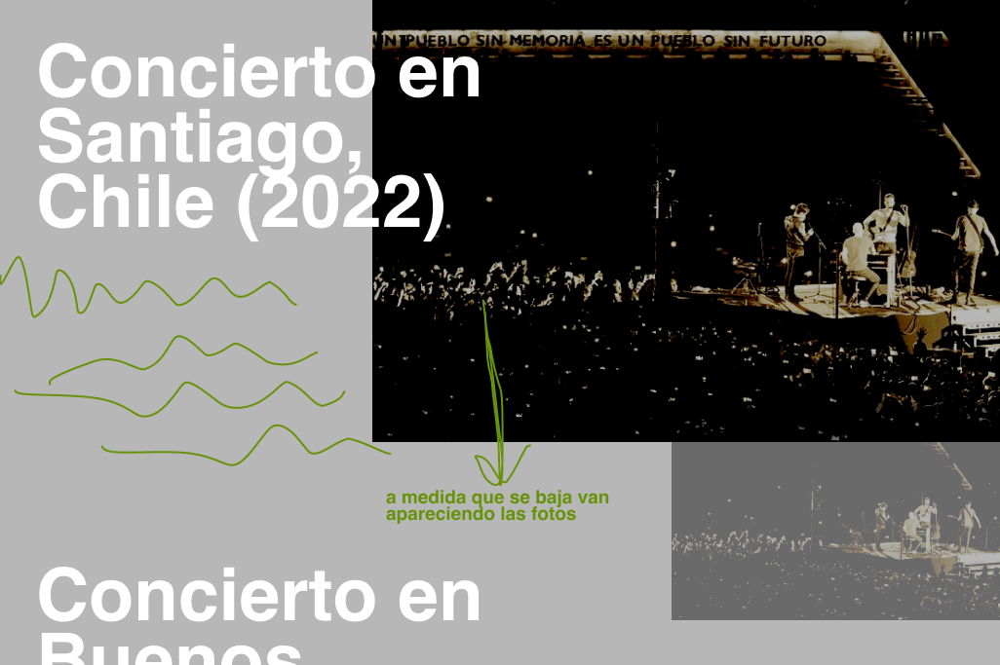

Los Integrantes
Coldplay no sería lo que es sin la unión de cuatro músicos que, desde sus inicios en Londres en 1996, encontraron en la música un lenguaje común para emocionar al mundo.
Desde sus comienzos hasta sus giras ecológicas, esta página es un homenaje a lo que hace de Coldplay algo más que una banda.

Coldplay no sería lo que es sin la unión de cuatro músicos que, desde sus inicios en Londres en 1996, encontraron en la música un lenguaje común para emocionar al mundo.
Desde los pasillos universitarios de Londres hasta los escenarios más grandes del planeta, Chris Martin, Jonny Buckland, Guy Berryman y Will Champion han recorrido un camino único, lleno de emoción, experimentación y compromiso. Todo empezó en el año 2000 con Parachutes...
A lo largo de su trayectoria, Coldplay no solo ha creado melodías inolvidables, sino también letras profundas que conectan con lo más humano: el amor, la pérdida, la esperanza, la culpa, la identidad y la belleza del mundo. Cada canción es una ventana al corazón de la banda y al de quienes las escuchan. Desde confesiones íntimas hasta reflexiones universales, sus letras nos invitan a detenernos y sentir. En “The Scientist”, Chris Martin canta al deseo de volver atrás para corregir errores del pasado. En “Fix You”, ofrece consuelo a quienes atraviesan el dolor. Y en “Coloratura”, nos lleva a mirar las estrellas para entender lo pequeños y a la vez significativos que somos.
Listado de los concierto más memorables a través de los años de trayectoria de Coldplay, su localidad imágenes del escenario y fans
Coldplay no solo busca emocionar con su música, sino también inspirar con sus acciones. Conscientes del impacto ambiental que pueden generar las giras internacionales, la banda ha asumido un rol activo en la lucha contra el cambio climático, marcando un precedente en la industria musical. Desde el diseño de sus espectáculos hasta cada entrada vendida, sus decisiones reflejan una búsqueda por armonizar arte, tecnología y sostenibilidad. En lugar de ignorar la huella ecológica de sus conciertos, decidieron repensarla y transformarla en una oportunidad para innovar. A través de distintas iniciativas, han demostrado que es posible ofrecer una experiencia inolvidable al público sin comprometer el futuro del planeta. Estos son algunos de los pilares de su gira sostenible: